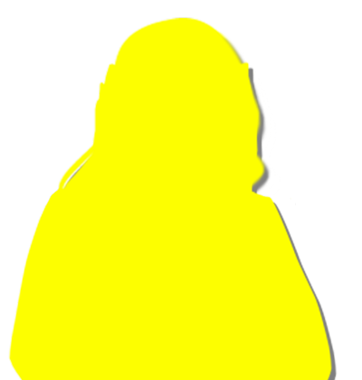
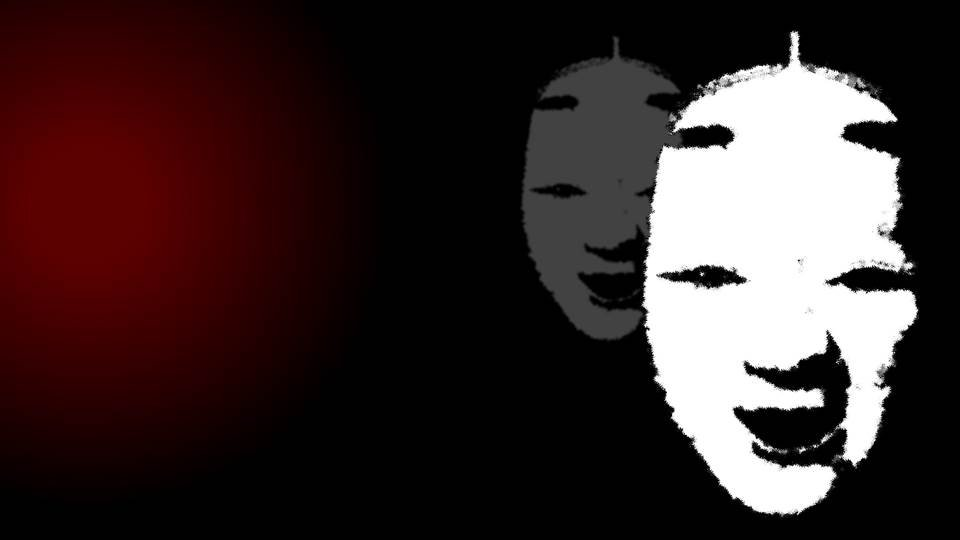
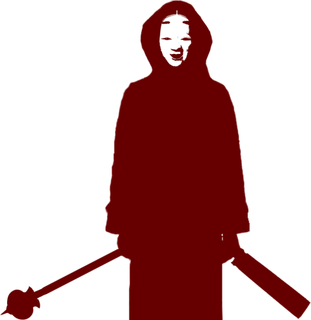
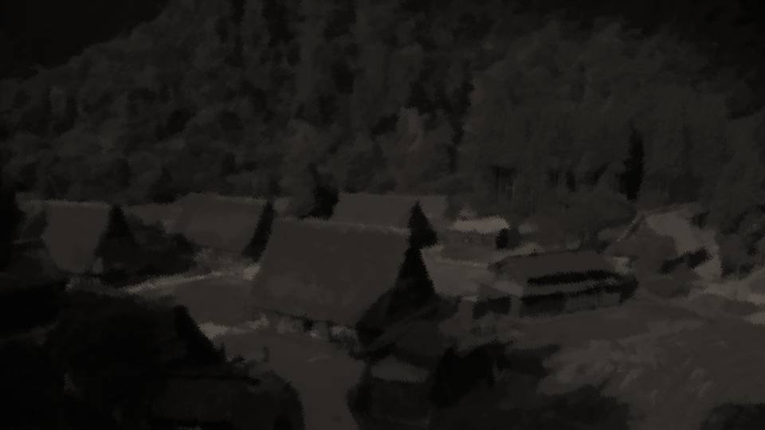

荒田集落


「五島、もう一度整理させてくれ。
今回の死神はお母さん。過去の死神はなつみの両親。今回の本当のターゲットは私。
なつみのお父さんは、とばっちり。そうだよな？」
五島は頭を抱えたまま、うなずく。
五島は頭を抱えたまま、うなずく。
「でも、まだ分からないことがたくさんある。死神は私たちが警察署に行くかもしれないって、思ってるはずだよな？
でも、それだと死神は手を出すことができない。計画は失敗に終わるはずだ」
「それは……すみません……分かりません……」
「それは……すみません……分かりません……」
「そして、私を殺す理由だ。私が殺されるほどお母さんに恨まれてるんて……」
「それも……分かりません……」
五島ですらお手上げの状態とは。推理はここで行き詰ってしまったのか？
「それも……分かりません……」
五島ですらお手上げの状態とは。推理はここで行き詰ってしまったのか？

「先輩、死神ってどんな見た目とか知ってますか？」


「私の予想だけど、鉈とメイス、大きな赤装束を着ている。そして能面をつけているはずだ」
「能面？ どうして能面なんか……」
「多分、死にまつわる格好をしたかったんじゃないか？ それに私は死神の正体をお父さんだと思っていたから、能面と赤装束に鉈とメイス――」
「多分、死にまつわる格好をしたかったんじゃないか？ それに私は死神の正体をお父さんだと思っていたから、能面と赤装束に鉈とメイス――」

「いやあの、ちょ、ちょっと待ってください！ 色々とおかしなことになってますよ？」
私は何かおかしなことを言ったか？
私は何かおかしなことを言ったか？
「先輩、能面や赤装束について詳しく聞かせてください！」
「いや、詳しくも何も……法要の時に能面をつけるのは当たり前だろ？ それに、死んだ人は死神として能面、赤装束、鉈、メイスを持ってるもんだ。 それに倣って、葬儀の参列者も死んだ人と同じ格好をする」
「え……？」
「いや、詳しくも何も……法要の時に能面をつけるのは当たり前だろ？ それに、死んだ人は死神として能面、赤装束、鉈、メイスを持ってるもんだ。 それに倣って、葬儀の参列者も死んだ人と同じ格好をする」
「え……？」
「なんだかよく分からないですけど、その格好って、この事件ですごく重要なことです。
法要の時に能面をつける風習なんて聞いたことありません！」
そう言えば私は他の人の法要に出たことがない。新村家の法要が特別なのだろうか。
そう言えば私は他の人の法要に出たことがない。新村家の法要が特別なのだろうか。
「死神と言えば、普通は骸骨に大きなカマってイメージです。能面と赤装束なんて……」
「いや、それは知ってるけどさ。お父さんの実家がある荒田集落での死神って、能面と赤装束なんだよ。 集落では、死んだ人のことを死神って呼んで、法要の参列者も死神と同じ格好をする。 テレビでも時々、スーツ着ただけの手抜きっぽい葬式とか見るけどさ、正式にやるならやっぱり能面と赤装束だろ？」
「いや、それは知ってるけどさ。お父さんの実家がある荒田集落での死神って、能面と赤装束なんだよ。 集落では、死んだ人のことを死神って呼んで、法要の参列者も死神と同じ格好をする。 テレビでも時々、スーツ着ただけの手抜きっぽい葬式とか見るけどさ、正式にやるならやっぱり能面と赤装束だろ？」
「じゃあ、新村先輩の実家では、法要に参加する人も死んだ人もみんな、能面と赤装束ってことですか？」
「ああ、そうだ。ずらっと能面が並ぶことになる」
「腑に落ちました……。やっと正しい切り口が見えましたよ……」
五島は放り投げていたペンとメモ帳を整える。
「ああ、そうだ。ずらっと能面が並ぶことになる」
「腑に落ちました……。やっと正しい切り口が見えましたよ……」
五島は放り投げていたペンとメモ帳を整える。
「先輩、もしかしたら、この事件、もっと根深いものかもしれません。
私は新村先輩のお母さんが主犯格だと思っていましたが、少しおかしいと思っていたんです。どうしてここまで手際よくできたんだろうって。
新村家のこと、詳しく教えてください！」
「いや……詳しくって言われても。私もそんなに知らないぞ？」
「いや……詳しくって言われても。私もそんなに知らないぞ？」

「荒田集落っていう、お父さんの実家があるへんぴなど田舎だ。
飯沢県の北西にあって30人くらいしか住んでいない。それ以上のことは……」
私は荒田集落に住んだことがないし、たまにお母さんについていって帰省するだけだ。
私は荒田集落に住んだことがないし、たまにお母さんについていって帰省するだけだ。
「いや……そういえば、うちのお母さんは集落に帰省するとびっくりするほど歓迎されるんだ。
もともと先祖がはみ出し者の集まりだったらしくて、荒田集落に嫁入りする女の人は、すごくありがたがられるとか」

五島は無言でメモを続けている。
「私の勝手なイメージですけど、そういう集落ってすごく排他的な気がするんです。
でも嫁入りして歓迎されるって、すごくふところが深い集落なんですね。
何か、独特の嫁入り条件とかないんですか？」
集落自体は閉鎖的で、他とあまり関わりを持とうとしない。
そうなると、嫁入りって大変な事だったのかもしれないが、私はそんな話を聞いたことがない。
お母さんの性格なら、そんな苦労話なんて語ろうとしないだろうけど。
そうなると、嫁入りって大変な事だったのかもしれないが、私はそんな話を聞いたことがない。
お母さんの性格なら、そんな苦労話なんて語ろうとしないだろうけど。
「悪い、嫁入り条件なんて知らないな。何かあるかもしれないけど、少なくとも私は……」
確かに、能面のこと――そしてお母さんがやるにしては、五島の言うように手際が良すぎるのが気になる。
つまり、可能性としては――。
確かに、能面のこと――そしてお母さんがやるにしては、五島の言うように手際が良すぎるのが気になる。
つまり、可能性としては――。
「五島、もしかして、荒田集落の人間が手を貸しているのか？」
もしそうだとしたら、こんな大がかりな犯罪、止めるなんて不可能だ……！
もしそうだとしたら、こんな大がかりな犯罪、止めるなんて不可能だ……！
「多分、直接は関係ないと思います。そうでないと、古郡先輩のお父さんには殺される必然性がありません。
古郡先輩の両親が女ケ沢市事件の実行犯だから、今回の被害者になり得る。
もし荒田集落の人間が女ケ沢市事件の実行犯なら、わざわざ古郡家を使う必要はありませんし、女ケ沢市事件とは全くの無関係です」
確かにそうだな。女ケ沢市事件の犯行が荒田集落の人間なら、古郡家は関係ないし、今日の事件とも無関係。
第一、これまでの法要には集落の人間全員が参加していたから、四月八日に女ケ沢に行くことは不可能。
閉鎖的な集落だから、冠婚葬祭の欠席なんてなかなか――。
第一、これまでの法要には集落の人間全員が参加していたから、四月八日に女ケ沢に行くことは不可能。
閉鎖的な集落だから、冠婚葬祭の欠席なんてなかなか――。
いや、待てよ……？
そうなると今日お母さんが仕事と言う理由で、法要を欠席なんて許されるわけがない。
しかも自分の夫の法要だし。
そうなると今日お母さんが仕事と言う理由で、法要を欠席なんて許されるわけがない。
しかも自分の夫の法要だし。
今回のように私の体調不良ならともかく、お母さんが欠席できるなんて。
つまり、荒田集落でもお母さんが今日、何らかの事件を起こすことを把握していたなら……。
つまり、荒田集落でもお母さんが今日、何らかの事件を起こすことを把握していたなら……。
「じゃあ、荒田集落の人間が、間接的に手を貸している、ということか。
直接関与はしなくても、お母さんの頼みなら、何かの形で多分協力すると思う」
「やっぱりそうですか……」
五島はペンを置いて頭を抱えた。
無理もない。話が大きくなりすぎている。
五島はペンを置いて頭を抱えた。
無理もない。話が大きくなりすぎている。
「すみません、ちょっと休憩させてください……」
「ああ、悪いな、色々悩ませてしまって」
仮に集落を丸ごと相手にするとなると、いくら五島でも対処のしようがない。
せめて、私がちょっとでも集落のことを思い返し、対策を立てるしか……。
「ああ、悪いな、色々悩ませてしまって」
仮に集落を丸ごと相手にするとなると、いくら五島でも対処のしようがない。
せめて、私がちょっとでも集落のことを思い返し、対策を立てるしか……。
荒田集落――。
人口は30人程度で、山奥の終着駅からさらに深く山に入り、ようやくたどり着く。
さすがにこの現代では、自動車や電気もあるけど、コンビニやスーパーはなく、狩りや農作業で食料を得ることも多い。
ふもとまで下りて買い出しすることもあるけど。
人口は30人程度で、山奥の終着駅からさらに深く山に入り、ようやくたどり着く。
さすがにこの現代では、自動車や電気もあるけど、コンビニやスーパーはなく、狩りや農作業で食料を得ることも多い。
ふもとまで下りて買い出しすることもあるけど。
でも確かに、荒田集落以外で死神の格好は見たことがないな。
物心ついた時から見てきたから、私には違和感もないのだけど。
まあ、今は集落の文化なんてどうでもいいか。
物心ついた時から見てきたから、私には違和感もないのだけど。
まあ、今は集落の文化なんてどうでもいいか。
五島によれば、集落が女ケ沢市事件に関わっている可能性は薄いらしい。
なぜなら、わざわざなつみの両親が実行犯をする必要もないし、今回の事件の被害者にもならない。
あり得るとすれば、今回の事件に関わっている可能性だ。
なぜなら、わざわざなつみの両親が実行犯をする必要もないし、今回の事件の被害者にもならない。
あり得るとすれば、今回の事件に関わっている可能性だ。
何らかの理由でなつみの両親を殺すために、今日お母さんが動いたとしよう。
そのお母さんの手助けのために、集落が動いているとすれば――。
もしお母さんが、膝をついて頼み込んだら、集落が動く可能性もある。
それくらい、よそ者の嫁は歓迎されるのだ。
そのお母さんの手助けのために、集落が動いているとすれば――。
もしお母さんが、膝をついて頼み込んだら、集落が動く可能性もある。
それくらい、よそ者の嫁は歓迎されるのだ。
くそ……お母さん犯人説を否定したいけど、どうしてもあらゆることで筋が通ってしまう。
しかし、30人動いているとなると……。
ん？ つまりそれって……集落の人間が…… この元木町に？
しかし、30人動いているとなると……。
ん？ つまりそれって……集落の人間が…… この元木町に？
私は思わず立ち上がり、周囲を見回した。
「先輩、どうしたんですか？」
「五島分からないのか！？ 荒田集落の人間が周りにいるかもしれないんだぞ！」
「五島分からないのか！？ 荒田集落の人間が周りにいるかもしれないんだぞ！」
このザッハにだって、どこかでこっそりと私たちを監視していて……！
どこだ！？ どこにいる！？
荒田集落の者の顔は全員知っている！ どこにいやがる！？
どこだ！？ どこにいる！？
荒田集落の者の顔は全員知っている！ どこにいやがる！？
…………
だが、それらしき者はいない。
「それは大丈夫だと思いますよ。小さな集落なら、先輩に顔がばれてしまいますし。
あり得るとしてもあくまでも間接的に手を貸すだけですから」
「ああ、そうだったな……」
「それに、犯人にとっても今回の事件は想定外って言ったじゃないですか。 大人数を飯沢県の北から急に動かしたら、さすがに目立っちゃいますよ。 しかもこんな事件が起きた日に大人数で来たら、警察だって目を光らせます」
「ああ、そうだったな……」
「それに、犯人にとっても今回の事件は想定外って言ったじゃないですか。 大人数を飯沢県の北から急に動かしたら、さすがに目立っちゃいますよ。 しかもこんな事件が起きた日に大人数で来たら、警察だって目を光らせます」
「確かにそうだな。だけど今は観光客も多いだろ？ 事件を知らずに大勢きても不自然じゃないんじゃないか？」
「そう……ですね。やっぱり完全に否定はできませんね。 そう言えば…… 古郡先輩、ちょっと遅いですね」
おい……！
それって！
「そう……ですね。やっぱり完全に否定はできませんね。 そう言えば…… 古郡先輩、ちょっと遅いですね」
おい……！
それって！
なつみはトイレにいるはず！
いくらなんでもなつみの帰りが遅すぎる……！
いくらなんでもなつみの帰りが遅すぎる……！
「おい、なつみ！ なつみー！」
返事がない。
まさか……なつみが……！
返事がない。
まさか……なつみが……！
Read ✓ Next in this arc →